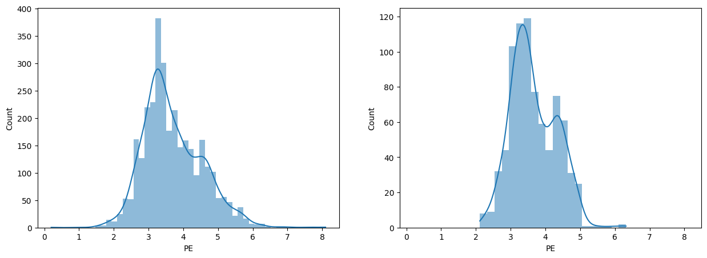

Let’s do some machine learning!¶
First we’ll import some data. I’m using the famous Panoma dataset from the Kansas Geological Survey, and loading a version from my own collection.
import pandas as pd
df = pd.read_csv('https://raw.githubusercontent.com/scienxlab/datasets/main/kgs/panoma-training-data.csv')
df.head()
| Well Name | Depth | Formation | RelPos | Marine | GR | ILD | DeltaPHI | PHIND | PE | Facies | LATITUDE | LONGITUDE | ILD_log10 | Lithology | RHOB | Mineralogy | Siliciclastic | |
|---|---|---|---|---|---|---|---|---|---|---|---|---|---|---|---|---|---|---|
| 0 | SHRIMPLIN | 851.3064 | A1 SH | 1.000 | 1 | 77.45 | 4.613176 | 9.9 | 11.915 | 4.6 | 3.0 | 37.978076 | -100.987305 | 0.664 | siltstone | 2393.499945 | siliciclastic | True |
| 1 | SHRIMPLIN | 851.4588 | A1 SH | 0.979 | 1 | 78.26 | 4.581419 | 14.2 | 12.565 | 4.1 | 3.0 | 37.978076 | -100.987305 | 0.661 | siltstone | 2416.119814 | siliciclastic | True |
| 2 | SHRIMPLIN | 851.6112 | A1 SH | 0.957 | 1 | 79.05 | 4.549881 | 14.8 | 13.050 | 3.6 | 3.0 | 37.978076 | -100.987305 | 0.658 | siltstone | 2404.576056 | siliciclastic | True |
| 3 | SHRIMPLIN | 851.7636 | A1 SH | 0.936 | 1 | 86.10 | 4.518559 | 13.9 | 13.115 | 3.5 | 3.0 | 37.978076 | -100.987305 | 0.655 | siltstone | 2393.249071 | siliciclastic | True |
| 4 | SHRIMPLIN | 851.9160 | A1 SH | 0.915 | 1 | 74.58 | 4.436086 | 13.5 | 13.300 | 3.4 | 3.0 | 37.978076 | -100.987305 | 0.647 | siltstone | 2382.602601 | siliciclastic | True |
Add a column of Gaussian noise, a completely spurious feature, to make a point later on.
import numpy as np
rng = np.random.default_rng(42)
df['Noise'] = rng.normal(size=len(df))
Make features and target¶
We’re going to predict lithology from well logs..
features = ['GR', 'RHOB', 'PE', 'Noise']
target = 'Lithology'
df[target].value_counts()
Lithology
siltstone 1586
limestone 737
wackestone 628
mudstone 543
sandstone 282
dolomite 190
Name: count, dtype: int64
Split train and test¶
What kind of data do we have?
import matplotlib.pyplot as plt
shrimplin = df['Well Name'] == 'SHRIMPLIN'
plt.plot(df.loc[shrimplin, 'Depth'], df.loc[shrimplin, 'GR'])
[<matplotlib.lines.Line2D at 0x7f3269dfb260>]
Like most geoscience data, it is not IID but autocorrelated. So we split by well.
test_wells = ['CRAWFORD', 'STUART']
test_flag = df['Well Name'].isin(test_wells)
X_test = df.loc[test_flag, features]
y_test = df.loc[test_flag, target]
X_train = df.loc[~test_flag, features]
y_train = df.loc[~test_flag, target]
X_train.describe()
| GR | RHOB | PE | Noise | |
|---|---|---|---|---|
| count | 3157.000000 | 3157.000000 | 3157.000000 | 3157.000000 |
| mean | 66.154671 | 2280.639520 | 3.693391 | -0.018322 |
| std | 28.384586 | 230.286185 | 0.852029 | 1.005407 |
| min | 13.250000 | 1500.000000 | 0.200000 | -3.648413 |
| 25% | 48.400000 | 2187.346268 | 3.100000 | -0.685853 |
| 50% | 66.220000 | 2338.646882 | 3.501000 | 0.003796 |
| 75% | 79.860000 | 2435.108529 | 4.281000 | 0.639626 |
| max | 200.000000 | 2802.871147 | 8.094000 | 3.178854 |
import seaborn as sns
sns.pairplot(df, x_vars=features, y_vars=features, hue='Lithology')
<seaborn.axisgrid.PairGrid at 0x7f3269e49160>
X_train['RHOB'].hist(bins=100)
<Axes: >
What now?¶
Look at plots? Analyse a DataFrame? Make a report? Make a dashboard?
🚩 redflag is here!¶
import redflag as rf
from importlib.metadata import version
version('redflag')
'0.5.0'
🚩 redflag has functions¶
rf.is_clipped(X_train['RHOB'])
True
rf.is_imbalanced(y_train)
True
rf.imbalance_degree(y_train)
3.4203357617985457
rf.minority_classes(y_train)
array(['dolomite', 'sandstone', 'mudstone', 'wackestone'], dtype='<U10')
rf.get_outliers(X_train)
The default method for get_outliers has changed to "mah". Please specify the method explicitly to avoid this warning.
array([ 70, 71, 72, 73, 74, 75, 93, 139, 142, 175, 176,
177, 183, 233, 296, 297, 298, 301, 302, 303, 304, 305,
306, 307, 308, 309, 310, 311, 312, 375, 414, 415, 416,
417, 418, 419, 463, 531, 532, 533, 534, 575, 576, 577,
578, 579, 580, 581, 582, 583, 584, 585, 586, 587, 622,
633, 634, 635, 660, 661, 662, 712, 757, 758, 759, 760,
768, 769, 770, 771, 772, 773, 774, 775, 776, 779, 780,
797, 798, 799, 800, 801, 822, 823, 824, 846, 849, 850,
896, 897, 898, 899, 900, 933, 934, 935, 936, 937, 949,
995, 996, 997, 998, 999, 1127, 1128, 1129, 1216, 1217, 1314,
1315, 1316, 1352, 1353, 1354, 1357, 1358, 1359, 1360, 1496, 1497,
1498, 1546, 1547, 1548, 1567, 1663, 1664, 1665, 1723, 1724, 1725,
1726, 1740, 1741, 1742, 1743, 1744, 1745, 1754, 1755, 1756, 1757,
1769, 1778, 1779, 1780, 1781, 1782, 1783, 1784, 1785, 1786, 1787,
1788, 1789, 1807, 1808, 1809, 1810, 1812, 1841, 1842, 1843, 1844,
1845, 1846, 1943, 1945, 1946, 1947, 1948, 1949, 1952, 2142, 2162,
2163, 2164, 2165, 2166, 2170, 2171, 2172, 2173, 2174, 2175, 2176,
2177, 2178, 2179, 2180, 2181, 2182, 2184, 2186, 2187, 2188, 2189,
2195, 2275, 2277, 2278, 2279, 2280, 2281, 2282, 2416, 2511, 2622,
2637, 2638, 2639, 2640, 2641, 2642, 2643, 2644, 2738, 2739, 2740,
2741, 2867, 2868, 2869, 2870, 2871, 2872, 2873, 2882, 2883, 2884,
2919, 2920, 2921, 2922, 2923, 2924, 2925, 2926, 2927, 2928, 2929,
2930, 2931, 2932, 2933, 2953, 2959, 2973, 2974, 2975, 2976, 3004,
3005, 3033, 3034, 3035, 3036, 3037, 3038, 3040, 3041, 3042, 3043,
3044, 3045, 3046, 3047, 3048, 3049, 3050, 3051, 3052, 3053, 3054,
3055, 3060, 3062, 3066, 3067, 3068, 3069, 3070, 3071, 3072, 3073,
3074, 3075, 3076, 3077, 3078, 3079, 3080, 3081, 3082, 3087, 3088,
3089, 3090, 3091, 3092, 3093, 3094, 3095, 3096, 3098, 3099, 3100,
3101, 3109, 3110, 3111, 3112, 3113, 3114, 3115])
🚩 redflag has pandas accessors¶
y_train.redflag.minority_classes()
array(['dolomite', 'sandstone', 'mudstone', 'wackestone'], dtype='<U10')
df.redflag.correlation_detector(features)
🚩 Feature 0 appears to be autocorrelated.
🚩 Feature 1 appears to be autocorrelated.
🚩 Feature 2 appears to be autocorrelated.
df.redflag.feature_importances(features, target)
array([0.24578324, 0.20107571, 0.44039602, 0.11274503])
🚩 redflag has an sklearn pipeline¶
rf.pipeline
Pipeline(steps=[('rf.imbalance', ImbalanceDetector()),
('rf.clip', ClipDetector()),
('rf.correlation', CorrelationDetector()),
('rf.multimodality', MultimodalityDetector()),
('rf.outlier', OutlierDetector()),
('rf.distributions', DistributionComparator()),
('rf.importance', ImportanceDetector()),
('rf.dummy', DummyPredictor())])In a Jupyter environment, please rerun this cell to show the HTML representation or trust the notebook. On GitHub, the HTML representation is unable to render, please try loading this page with nbviewer.org.
Pipeline(steps=[('rf.imbalance', ImbalanceDetector()),
('rf.clip', ClipDetector()),
('rf.correlation', CorrelationDetector()),
('rf.multimodality', MultimodalityDetector()),
('rf.outlier', OutlierDetector()),
('rf.distributions', DistributionComparator()),
('rf.importance', ImportanceDetector()),
('rf.dummy', DummyPredictor())])ImbalanceDetector()
ClipDetector()
CorrelationDetector()
MultimodalityDetector()
OutlierDetector()
DistributionComparator()
ImportanceDetector()
DummyPredictor()
from sklearn.pipeline import make_pipeline
from sklearn.preprocessing import StandardScaler
from sklearn.ensemble import RandomForestClassifier
model = RandomForestClassifier()
pipe = make_pipeline(
StandardScaler(), # Standardize.
rf.pipeline, # 🚩 special pipeline.
model # The learning algo.
)
pipe = pipe.fit(X_train, y_train)
🚩 The labels are imbalanced by more than the threshold (0.420 > 0.400). See self.minority_classes_ for the minority classes.
🚩 Features 0, 1 have samples that may be clipped.
🚩 Features 0, 1, 2 have samples that may be correlated.
🚩 Feature 0 has a multimodal distribution.
ℹ️ Multimodality detection may not have succeeded for all groups in all features.
🚩 There are more outliers than expected in the training data (316 vs 31).
🚩 Feature 3 has low importance; check for relevance.
ℹ️ Dummy classifier scores: {'f1': 0.25488459423559606, 'roc_auc': 0.5} (most_frequent strategy).
The redflag pipeline does not transform anything and merely passes data through.
The pipeline still functions as normal.
y_pred = pipe.predict(X_test)
🚩 Feature 0 has samples that may be clipped.
🚩 Features 0, 1, 2 have samples that may be correlated.
🚩 There are more outliers than expected in the data (26 vs 8).
🚩 Feature 2 has a distribution that is different from training.
fig, axs = plt.subplots(ncols=2, figsize=(15, 5))
sns.histplot(X_train.iloc[:, 2], kde=True, lw=0, ax=axs[0])
sns.histplot(X_test.iloc[:, 2], kde=True, lw=0, ax=axs[1])
_ = axs[1].set_xlim(axs[0].get_xlim())

© 2024 Matt Hall, licensed CC BY